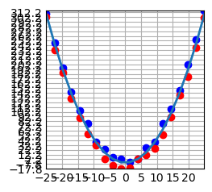

import numpy as np
import matplotlib.pyplot as plt
plt.style.use('_mpl-gallery')FUTURE ME: this post was very bad, I’m leaving it up for historical reasons but don’t try to follow it!
I recently watched an interesting video by Sebastian Lague where he classifies random data using a neural network from scratch. I’m not quite good enough at calculus to do all of that, but I think I can pull it off with PyTorch. I am going to try and initialize some data, then classify a line that divides the data. That will actually be the hardest part, as I am still a novice at data science.
Plotting the data
def random_ans(x, is_above):
y = correct_ans(x)
if is_above:
return np.random.uniform(y, y + 15)
return np.random.uniform(y, y - 15)def correct_ans(x):
return 0.5*x**2-5start = -25
stop = 25
num_points = 20
blueX = np.linspace(start,stop,num_points)
redX = np.linspace(start,stop,num_points)
blueY = random_ans(blueX,True)
redY = random_ans(redX,False)
actualY = correct_ans(blueX)
# plot
fig, ax = plt.subplots()
ax.scatter(blueX, blueY, c='blue')
ax.scatter(redX, redY, c='red')
ax.plot(blueX, actualY, linewidth=2.0)
ax.set(xlim=(start, stop), xticks=np.arange(start, stop,5),
ylim=(np.min(redY), np.max(blueY)), yticks=np.arange(np.min(redY), np.max(blueY),10))
plt.show()
that seems to have made them too close to the line. I want them to be spread out evenly, like the video, so I will just generate random numbers then assign them based on whether they are above or below.
def classify(x,y):
return [(blue,x[idx]) for idx,blue in enumerate(y) if blue > correct_ans(x[idx])], [(red,x[idx]) for idx,red in enumerate(y) if red < correct_ans(x[idx])]start = -25
stop = 25
num_points = 500
x = np.random.randint(start,stop,num_points)
y = np.random.randint(start,stop,num_points)
blue,red = classify(x,y)
blueY,blueX = zip(*blue)
redY, redX = zip(*red)
actualX = np.linspace(start,stop,num_points)
actualY = correct_ans(actualX)
# plot
fig, ax = plt.subplots()
ax.scatter(blueX, blueY, c='blue')
ax.scatter(redX, redY, c='red')
ax.plot(actualX,actualY, linewidth=2.0)
ax.set(xlim=(start, stop), xticks=np.arange(start, stop,5),
ylim=(start, stop), yticks=np.arange(start, stop,5))
plt.show()If I’m being honest, the reason that wasn’t commented is because I barely understand it. I spent an hour trying to make those functions work… Still trying to learn numpy. So just look up the functions yourselves if you want to see what they do, it was mostly ChatGPT’s work.
Onto the model! Read the math classifier if you haven’t already, it should explain most of what is coming
import torch
import torch.nn as nnclass Net(torch.nn.Module):
def __init__(self):
super().__init__()
self.linear1 = nn.Linear(2, 64) # Input size: 2 (x and y), Output size: 64
self.linear2 = nn.Linear(64, 1) # Input size: 64, Output size: 1
self.relu = nn.ReLU()
def forward(self, xy):
# Apply the first linear layer followed by the ReLU activation
output = self.relu(self.linear1(xy))
# Apply the second linear layer
output = self.linear2(output)
return nn.functional.normalize(output)Now we need a way to display all the predicted values for the graph. I am going to use a PILImage, and set each pixel to either blue or red according to the model’s predictions. There may be a simpler way, but this seems fun.
from PIL import Image
output_image = Image.new('RGB', (100, 100))
# Generate x and y coordinate arrays
x = np.arange(1, 101)
y = np.arange(1, 101)
# Use meshgrid to create 2D arrays for every combination
X, Y = np.meshgrid(x, y)
# Flatten the 2D arrays to get the final x and y coordinate arrays
x_coords = torch.from_numpy(X.flatten())
y_coords = torch.from_numpy(Y.flatten()).to(torch.float32)
# Stack 'x' and 'y' along the last dimension to create a single tensor with shape (batch_size, 2)
xy = torch.stack((x_coords, y_coords), dim=-1)
net = Net()
preds = net(xy)
for row in range(100):
for col in range(100):
if preds[row*col] > 0:
# Set the pixel to blue (255, 0, 0)
output_image.putpixel((col, row), (0, 0, 255))
else:
# Set the pixel to red (0, 0, 255)
output_image.putpixel((col, row), (255, 0, 0))
plt.imshow(output_image)
plt.axis('off')
plt.show()
# Seperate into function
def visualize_preds(net):
preds = net(xy)
for row in range(100):
for col in range(100):
if preds[row*col] > 0:
# Set the pixel to blue (255, 0, 0)
output_image.putpixel((col, row), (0, 0, 255))
else:
# Set the pixel to red (0, 0, 255)
output_image.putpixel((col, row), (255, 0, 0))
plt.imshow(output_image)
plt.axis('off')
plt.show()visualize_preds(net)Ok, there is the output of the image. Let’s try training the model, to see if we can get a better output that looks more like the function.
Dataset initilization
xy.shapetorch.Size([10000, 2])def correct_ans_tensor(x,y):
return 0.5*x**2-5 < ycorrectValues = correct_ans_tensor(x_coords,y_coords)
correctValues.shape
correctValues[0]tensor(True)import torch.optim as optim
criterion = nn.CrossEntropyLoss()
optimizer = optim.SGD(net.parameters(), lr=0.001, momentum=0.9)
correctValues = correctValues.float()
dataset = torch.utils.data.TensorDataset(xy, correctValues)
data_loader = torch.utils.data.DataLoader(dataset, batch_size=64)for epoch in range(10): # loop over the dataset multiple times
running_loss = 0.0
for i, data in enumerate(data_loader, 0):
# get the inputs; data is a list of [inputs, labels]
inputs, labels = data[0], data[1]
# zero the parameter gradients
optimizer.zero_grad()
# forward + backward + optimize
outputs = net(inputs)
loss = criterion(outputs.squeeze(), labels)
loss.backward()
optimizer.step()
# print statistics
running_loss += loss.item()
if i % 100 == 99: # print every 2000 mini-batches
print(f'[{epoch + 1}, {i + 1:5d}] loss: {running_loss / 2000:.3f}')
running_loss = 0.0
print('Finished Training')[1, 100] loss: 1.040
[2, 100] loss: 1.040
[3, 100] loss: 1.040
[4, 100] loss: 1.040
[5, 100] loss: 1.040
[6, 100] loss: 1.040
[7, 100] loss: 1.040
[8, 100] loss: 1.040
[9, 100] loss: 1.040
[10, 100] loss: 1.040
Finished Trainingnet(torch.tensor([[0., -2.], [3., 0.]]))tensor([[-1.],
[ 1.]], grad_fn=<DivBackward0>)visualize_preds(net)
Ok, something went wrong here. It seems to be outputting roughly the same thing, so either my training went wrong or my image output is wrong
# using pyplotlib to check
start = -25
stop = 25
num_points = 500
x = torch.from_numpy(np.random.randint(start,stop,num_points))
y = torch.from_numpy(np.random.randint(start,stop,num_points))
xy = torch.stack((x, y), dim=-1).float()
predictions = net(xy)
blue, red = [(blue,x[idx]) for idx,blue in enumerate(y) if 1. == predictions[idx]], [(red,x[idx]) for idx,red in enumerate(y) if -1. == predictions[idx]]
blueY,blueX = zip(*blue)
redY, redX = zip(*red)
actualX = np.linspace(start,stop,num_points)
actualY = correct_ans(actualX)
# plot
fig, ax = plt.subplots()
ax.scatter(blueX, blueY, c='blue')
ax.scatter(redX, redY, c='red')
ax.plot(actualX,actualY, linewidth=2.0)
ax.set(xlim=(start, stop), xticks=np.arange(start, stop,5),
ylim=(start, stop), yticks=np.arange(start, stop,5))
plt.show()
Hmm, that didn’t work too well. Maybe there’s an issue with the training data? I’ll try doing it with all the points instead
correctValues = correct_ans_tensor(x_coords,y_coords)
criterion = nn.CrossEntropyLoss()
optimizer = optim.SGD(net.parameters(), lr=0.001, momentum=0.9)
correctValues = correctValues.float()
dataset = torch.utils.data.TensorDataset(xy, correctValues)
data_loader = torch.utils.data.DataLoader(dataset, batch_size=64)AssertionError: Size mismatch between tensorsxy.shapetorch.Size([500, 2])correctValues.shapetorch.Size([10000])correctValues = correct_ans_tensor(x,y) # corrected to x,y
criterion = nn.CrossEntropyLoss()
optimizer = optim.SGD(net.parameters(), lr=0.001, momentum=0.9)
correctValues = correctValues.float()
dataset = torch.utils.data.TensorDataset(xy, correctValues)
data_loader = torch.utils.data.DataLoader(dataset, batch_size=64)for epoch in range(100): # loop over the dataset multiple times
running_loss = 0.0
for i, data in enumerate(data_loader, 0):
# get the inputs; data is a list of [inputs, labels]
inputs, labels = data[0], data[1]
# zero the parameter gradients
optimizer.zero_grad()
# forward + backward + optimize
outputs = net(inputs)
loss = criterion(outputs.squeeze(), labels)
loss.backward()
optimizer.step()
# print statistics
running_loss += loss.item()
if i % 16 == 1: # print every 2000 mini-batches
print(f'[{epoch + 1}, {i + 1:5d}] loss: {running_loss / 2000:.3f}')
running_loss = 0.0
print('Finished Training')[1, 2] loss: 0.024
[2, 2] loss: 0.024
[3, 2] loss: 0.024
[4, 2] loss: 0.024
[5, 2] loss: 0.024
[6, 2] loss: 0.024
[7, 2] loss: 0.024
[8, 2] loss: 0.024
[9, 2] loss: 0.024
[10, 2] loss: 0.024
[11, 2] loss: 0.024
[12, 2] loss: 0.024
[13, 2] loss: 0.024
[14, 2] loss: 0.024
[15, 2] loss: 0.024
[16, 2] loss: 0.024
[17, 2] loss: 0.024
[18, 2] loss: 0.024
[19, 2] loss: 0.024
[20, 2] loss: 0.024
[21, 2] loss: 0.024
[22, 2] loss: 0.024
[23, 2] loss: 0.024
[24, 2] loss: 0.024
[25, 2] loss: 0.024
[26, 2] loss: 0.024
[27, 2] loss: 0.024
[28, 2] loss: 0.024
[29, 2] loss: 0.024
[30, 2] loss: 0.024
[31, 2] loss: 0.024
[32, 2] loss: 0.024
[33, 2] loss: 0.024
[34, 2] loss: 0.024
[35, 2] loss: 0.024
[36, 2] loss: 0.024
[37, 2] loss: 0.024
[38, 2] loss: 0.024
[39, 2] loss: 0.024
[40, 2] loss: 0.024
[41, 2] loss: 0.024
[42, 2] loss: 0.024
[43, 2] loss: 0.024
[44, 2] loss: 0.024
[45, 2] loss: 0.024
[46, 2] loss: 0.024
[47, 2] loss: 0.024
[48, 2] loss: 0.024
[49, 2] loss: 0.024
[50, 2] loss: 0.024
[51, 2] loss: 0.024
[52, 2] loss: 0.024
[53, 2] loss: 0.024
[54, 2] loss: 0.024
[55, 2] loss: 0.024
[56, 2] loss: 0.024
[57, 2] loss: 0.024
[58, 2] loss: 0.024
[59, 2] loss: 0.024
[60, 2] loss: 0.024
[61, 2] loss: 0.024
[62, 2] loss: 0.024
[63, 2] loss: 0.024
[64, 2] loss: 0.024
[65, 2] loss: 0.024
[66, 2] loss: 0.024
[67, 2] loss: 0.024
[68, 2] loss: 0.024
[69, 2] loss: 0.024
[70, 2] loss: 0.024
[71, 2] loss: 0.024
[72, 2] loss: 0.024
[73, 2] loss: 0.024
[74, 2] loss: 0.024
[75, 2] loss: 0.024
[76, 2] loss: 0.024
[77, 2] loss: 0.024
[78, 2] loss: 0.024
[79, 2] loss: 0.024
[80, 2] loss: 0.024
[81, 2] loss: 0.024
[82, 2] loss: 0.024
[83, 2] loss: 0.024
[84, 2] loss: 0.024
[85, 2] loss: 0.024
[86, 2] loss: 0.024
[87, 2] loss: 0.024
[88, 2] loss: 0.024
[89, 2] loss: 0.024
[90, 2] loss: 0.024
[91, 2] loss: 0.024
[92, 2] loss: 0.024
[93, 2] loss: 0.024
[94, 2] loss: 0.024
[95, 2] loss: 0.024
[96, 2] loss: 0.024
[97, 2] loss: 0.024
[98, 2] loss: 0.024
[99, 2] loss: 0.024
[100, 2] loss: 0.024
Finished Training# using pyplotlib to check
start = -25
stop = 25
num_points = 500
x = torch.from_numpy(np.random.randint(start,stop,num_points))
y = torch.from_numpy(np.random.randint(start,stop,num_points))
xy = torch.stack((x, y), dim=-1).float()
predictions = net(xy)
blue, red = [(blue,x[idx]) for idx,blue in enumerate(y) if 1. == predictions[idx]], [(red,x[idx]) for idx,red in enumerate(y) if -1. == predictions[idx]]
blueY,blueX = zip(*blue)
redY, redX = zip(*red)
actualX = np.linspace(start,stop,num_points)
actualY = correct_ans(actualX)
# plot
fig, ax = plt.subplots()
ax.scatter(blueX, blueY, c='blue')
ax.scatter(redX, redY, c='red')
ax.plot(actualX,actualY, linewidth=2.0)
ax.set(xlim=(start, stop), xticks=np.arange(start, stop,5),
ylim=(start, stop), yticks=np.arange(start, stop,5))
plt.show()Ok, something is 100% wrong with my model. Maybe adding more layers will do the trick.
class Net(torch.nn.Module):
def __init__(self):
super().__init__()
self.linear1 = nn.Linear(2, 64) # Input size: 2 (x and y), Output size: 64
self.linear2 = nn.Linear(64, 128) # Input size: 64, Output size: 128
self.linear3 = nn.Linear(128, 1) # Input size: 128, Output size: 1
self.relu = nn.ReLU()
def forward(self, xy):
# Apply the first linear layer followed by the ReLU activation
output = self.relu(self.linear1(xy))
# Apply the second linear layer followed by the ReLU activation
output = self.relu(self.linear2(output))
# Apply the third linear layer
output = self.linear3(output)
return nn.functional.normalize(output)
net = Net()for epoch in range(100): # loop over the dataset multiple times
running_loss = 0.0
for i, data in enumerate(data_loader, 0):
# get the inputs; data is a list of [inputs, labels]
inputs, labels = data[0], data[1]
# zero the parameter gradients
optimizer.zero_grad()
# forward + backward + optimize
outputs = net(inputs)
loss = criterion(outputs.squeeze(), labels)
loss.backward()
optimizer.step()
# print statistics
running_loss += loss.item()
if i % 128 == 8: # print every 2000 mini-batches
print(f'[{epoch + 1}, {i + 1:5d}] loss: {running_loss / 2000:.3f}')
running_loss = 0.0
print('Finished Training')Finished Training# using pyplotlib to check
start = -25
stop = 25
num_points = 500
x = torch.from_numpy(np.random.randint(start,stop,num_points))
y = torch.from_numpy(np.random.randint(start,stop,num_points))
xy = torch.stack((x, y), dim=-1).float()
predictions = net(xy)
blue, red = [(blue,x[idx]) for idx,blue in enumerate(y) if 1. == predictions[idx]], [(red,x[idx]) for idx,red in enumerate(y) if -1. == predictions[idx]]
blueY,blueX = zip(*blue)
redY, redX = zip(*red)
actualX = np.linspace(start,stop,num_points)
actualY = correct_ans(actualX)
# plot
fig, ax = plt.subplots()
ax.scatter(blueX, blueY, c='blue')
ax.scatter(redX, redY, c='red')
ax.plot(actualX,actualY, linewidth=2.0)
ax.set(xlim=(start, stop), xticks=np.arange(start, stop,5),
ylim=(start, stop), yticks=np.arange(start, stop,5))
plt.show()Much more promising! It seems like the problem is that it doesn’t have enough layers, which is odd because it seems like an easy function, but I guess not.
class Net(torch.nn.Module):
def __init__(self):
super().__init__()
self.linear1 = nn.Linear(2, 256) # Input size: 2 (x and y), Output size: 256
self.linear2 = nn.Linear(256, 128) # Input size: 256, Output size: 128
self.linear3 = nn.Linear(128, 64) # Input size: 128, Output size: 64
self.linear4 = nn.Linear(64, 1) # Input size: 64, Output size: 1
self.relu = nn.ReLU()
def forward(self, xy):
# Apply the first linear layer followed by the ReLU activation
output = self.relu(self.linear1(xy))
# Apply the second linear layer followed by the ReLU activation
output = self.relu(self.linear2(output))
# Apply the third linear layer followed by the ReLU activation
output = self.relu(self.linear3(output))
# Apply the fourth linear layer
output = self.linear4(output)
return nn.functional.normalize(output)
net = Net()for epoch in range(100): # loop over the dataset multiple times
running_loss = 0.0
for i, data in enumerate(data_loader, 0):
# get the inputs; data is a list of [inputs, labels]
inputs, labels = data[0], data[1]
# zero the parameter gradients
optimizer.zero_grad()
# forward + backward + optimize
outputs = net(inputs)
loss = criterion(outputs.squeeze(), labels)
loss.backward()
optimizer.step()
# print statistics
running_loss += loss.item()
if i % 128 == 8: # print every 2000 mini-batches
print(f'[{epoch + 1}, {i + 1:5d}] loss: {running_loss / 2000:.3f}')
running_loss = 0.0
print('Finished Training')Finished Training# using pyplotlib to check
start = -25
stop = 25
num_points = 500
x = torch.from_numpy(np.random.randint(start,stop,num_points))
y = torch.from_numpy(np.random.randint(start,stop,num_points))
xy = torch.stack((x, y), dim=-1).float()
predictions = net(xy)
blue, red = [(blue,x[idx]) for idx,blue in enumerate(y) if 1. == predictions[idx]], [(red,x[idx]) for idx,red in enumerate(y) if -1. == predictions[idx]]
blueY,blueX = zip(*blue)
redY, redX = zip(*red)
actualX = np.linspace(start,stop,num_points)
actualY = correct_ans(actualX)
# plot
fig, ax = plt.subplots()
ax.scatter(blueX, blueY, c='blue')
ax.scatter(redX, redY, c='red')
ax.plot(actualX,actualY, linewidth=2.0)
ax.set(xlim=(start, stop), xticks=np.arange(start, stop,5),
ylim=(start, stop), yticks=np.arange(start, stop,5))
plt.show()